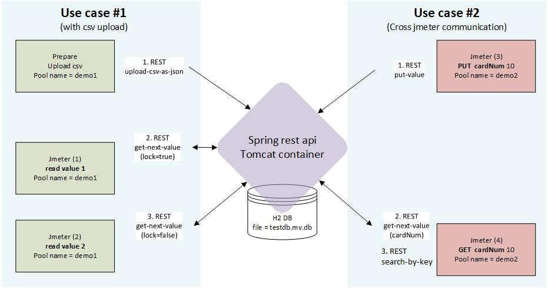

Примечания:
Количество полей и имена заголовков не зашиты в коде и может быть передано почти любое количество.
Если пул существует, он будет удален и создан заново.
Запрос:
curl -F 'file=@test.csv' "http://localhost:8080/api/v1/upload-csv-as-json?env=load&pool=demo_clients&override=true"
Если пул существует, записи добавятся в конец текущего пула.
Запрос:
curl -F 'file=@test.csv' "http://localhost:8080/api/v1/upload-csv-as-json?env=load&pool=demo_clients&override=false"
Файл выглядит примерно так
Метод get-next-value возвращает следующее значение из пула. Если пул подошел к концу, но в нем присутствуют не заблокированные записи, то чтение начнется сначала.
В данном случае на записи пула в БД ставится признак "locked" и она больше не будет отдаваться сервисом, пока признак не будет снят принудительно или пул не будет пересоздан заново.
Например, это необходимо для организации пула данных, которые могут использоваться только один раз (номер карты, логин и пароль)
Запрос:
curl http://localhost:8080/api/v1/get-next-value?pool=demo_clients&locked=true
Ответ:
{"rid":1,"values":{"username":"Vasya","phone":"12345","age":"33"},"locked":true}
Ответ содержит технические поля:
В поле values передаются даные одной строки из csv файла. Имена атрибутов соответствуют именам заголовков csv на момент загрузки файла
Запрос:
curl http://localhost:8080/api/v1/get-next-value?pool=demo_clients&locked=false
Ответ:
{"rid":1,"values":{"rid":3,"values":{"username":"Lena","phone":"4545455","age":"202023"},"locked":false}
Метод put-value.
В отличие от загрузки csv файла, данный метод не проверяет заголовки или формат. Всё тело post запроса сохраняется в БД без изменения и возвращается так без изменения.
Рекомендуется сохранять значение в Json виде.
Например, такой вид более удобен в дальнейшем {"applicationNumber":"23331234", "state":"input_data"}
, чем
23331234,input_data
Описание ключей:
Варианты использования:
Пример запроса (простой):
curl -XPOST 'http://localhost:8080/api/v1/put-value?pool=demo_put_clients' -H 'Content-Type: application/json' -d '{"applicationNumber":"2333132345555", "state":"input_data2"}'
Получим ответ (get-next-val):
{"rid":1,"values":{"applicationNumber":"2333132345555", "state":"input_data2"},"locked":false}
Пример запроса (сохраняем с ключом поиска):
curl -XPOST 'http://localhost:8080/api/v1/put-value?pool=demo_put_clients&search-key=1ea5f0a9-8f77-4c37-9c16-11f8bc18d258' -H 'Content-Type: application/json' -d '{"applicationNumber":"2333132345555", "state":"input_data2"}'
Делаем поиск (search-by-key):
{"rid":54,"searchkey":1ea5f0a9-8f77-4c37-9c16-11f8bc18d258,"values":{"par1":"23331234","par2":"input_data"},"locked":true}
Можно использовать для обмена разных потоков или разных скриптов между собой. Например, при асинхронном взаимодействии.
Например
Пример использования:
Запрос -
curl http://localhost:8080/api/v1/search-by-key?pool=demo_put_clients&locked=true&search-key=1ea5f0a9-8f77-4c37-9c16-11f8bc18d258Ответ -
{"rid":54,"searchkey":1ea5f0a9-8f77-4c37-9c16-11f8bc18d258,"values":{"par1":"23331234","par2":"input_data"},"locked":true}
Метод /unlock разблокирует запись пула по номеру rid.
<Не реализовано>
Текущий пример в файле <repo>\src\test\test.jmx
Версия jmx предварительная и будет улучшена.
Использован spring rest api
Запуск возможен в трех вариантах:
В данной реализации используется второй вариант.
Включен через application.properties настройкой "spring.datasource.url=jdbc:h2:file:./testdb"
Есть следующие метрики:
Запрос:
Ответ:
# HELP datapool_current_offset Current sequence position. # TYPE datapool_current_offset gauge datapool_current_offset{host="DESKTOP-TE8GD6E",port="0",environment="LOAD",name="UC03_CLIENTS",} 8936.0 # HELP datapool_total_rows Total rows count. # TYPE datapool_total_rows gauge datapool_total_rows{host="DESKTOP-TE8GD6E",port="0",environment="LOAD",name="UC03_CLIENTS",} 211736.0
Запрос:
Ответ:
# HELP datapool_current_offset Current sequence position. # TYPE datapool_current_offset gauge datapool_current_offset{host="DESKTOP-TE8GD6E",port="0",environment="LOAD",name="UC03_CLIENTS",} 9080.0 # HELP datapool_total_rows Total rows count. # TYPE datapool_total_rows gauge datapool_total_rows{host="DESKTOP-TE8GD6E",port="0",environment="LOAD",name="UC03_CLIENTS",} 211736.0 # HELP datapool_available_rows Available no locked rows count. # TYPE datapool_available_rows gauge datapool_available_rows{host="DESKTOP-TE8GD6E",port="0",environment="LOAD",name="UC03_CLIENTS",} 209847.0